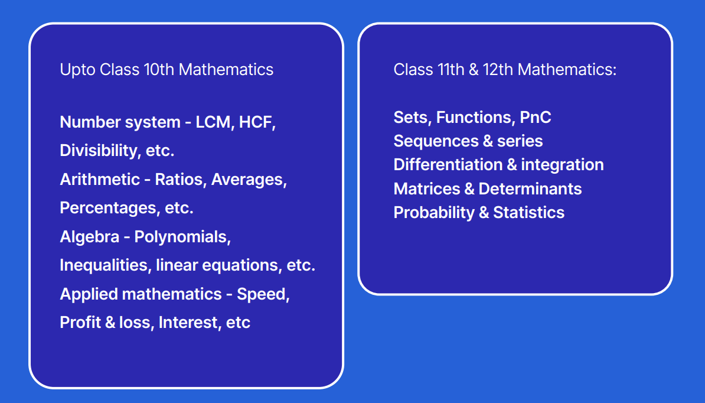

Love Babber
Contact: lovebabbar3@gmail.com
Linkedin: linkedin.com/in/love-babbar
GitHub: github.com/lovebabbar
|  |
I am a passionate software engineer with expertise in problem-solving and algorithmic thinking. I love to explore various technologies and frameworks to develop efficient and scalable solution. With a strong foundation in data structures and algorithms, I strive to create robust and optimized code. I am constantly expanding my skills and staying up-to-date with the latest advancements in the field of software development. |
Education
- Bachelor of Technology in Information Technology, Netaji Subhas Institute of Technology
- A.E.S.N.T Rama Rao Memorial Senior Secondary school
Work Experience
Software Engineer,Microsoft
Nov 2021-May2022
- Developed and maintained web application using HTML,CSS and Javascript
- Collaborate with cross-functional teams to design and implement software solution
- Optimized code performance and improved application efficiency
Software Development Engineer, Amazon
July 2019-October 2021
- Assisted in Developing and testing software modules
- Worked on bug fixing and performance enhancement tasks
Skills
- Java
- C++
- Python
- HTML
- CSS
- Javascript
- SQL
Achievements
- Service Selection Board(Recommendation letter for Officer entry in Indian Army)
- Published an article on data structure in a renowned tech magazine
Projects
- Library Management System
- Friendly Chat AppFriendly
Library Management System - Develop a desktop application by using java swing and MYSQL server
Hosted Link: example.com/ecommerce
GitHub Link: github.com/lovebabbar/ecommerce
Friendly Chat AppFriendly - An Android application application by use of firebase, by sending messages and images, also having login options.
Hosted Link: example.com/blog
GitHub Link: github.com/lovebabbar/blog